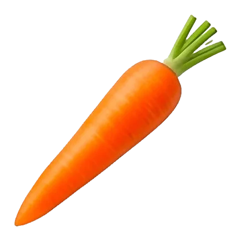
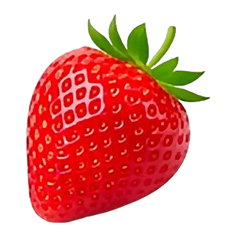

「PDFとして保存」を選んでください



旬の果物と野菜を教室で
Sainosは、子どもたちが果物や野菜を見分け、季節を理解し、食べものがどこから来るのかを知るための、独立した教育サイトです。
🔓アカウント不要児童・生徒も先生も、登録は必要ありません。
🛡️データ収集ゼロCookieもデータ収集もなし。GDPR（EU一般データ保護規則）に準拠しています。
🚫広告なし販売するものも、商業的な提携先もありません。
🖥️どこでも電子黒板、タブレット、パソコン、スマートフォンで。
子どもたちが見つけられること
イラスト付きガイド44本：歴史、季節、育つ場所、栄養、料理チャレンジ。
年齢別のクイズ：4〜6歳、7〜9歳、10〜12歳、中学生以上。1回10問。
月ごとの旬カレンダー。
産地マップ：果物や野菜がどこから来るのか。
用語集：核果、塊茎、AOP（原産地呼称保護）…をやさしく解説。
こどもモード：8〜12歳向けに書かれた文章とバッジつき。
フランスの学習指導要領との関連
サイクル1（3〜6歳・幼稚園）生きものの世界を探る：名前を言う、見分ける、味わう。
サイクル2（6〜9歳）世界を知る：生きもの、時間の流れ、季節。
サイクル3（9〜12歳）理科：食生活、食べものの由来。地理：消費。
持続可能性責任ある消費、地産地消（短い流通）、食品ロスの削減。
学年別の授業アイデア
QRコードを読み取るか、先生方へのページをご覧ください：
sainos.fr/ja/enseignants.html
Sainosは独立した非営利のプロジェクトです。ご質問や授業のアイデアは：sainos.fr/ja/contact.html